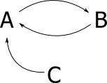

Objects, Modules, and Memory
Objects are created with the class keyword. Classes allow data and operations to be bound together on an object. In Monkey C, variables, functions, and other classes can be defined within a class.
Constructors
When an object is instantiated with the new keyword, the memory is allocated and the initialize method is called:
class Circle
{
protected var mRadius;
public function initialize( aRadius ) {
mRadius = aRadius;
}
}
function createCircle() {
var c = new Circle( 1.5 );
}Within a method implementation you can refer to your current instance using either the self or me keywords.
class A
{
public var x;
public var y;
public function initialize() {
me.x = "Hello"; // Set current instance x variable
self.y = "Hello"; // Set current instance y variable
}
}To instantiate an inner class of nested classes, you must first instantiate the outer class. However, unlike Java, nested classes in Monkey C do not have access to the members of the enclosing class.
Inheritance
Monkey C uses the extends keyword to support class inheritance:
import Toybox.System;
class A
{
function print() {
System.print( "Hello!" );
}
}
class B extends A
{
}
function usageSample() {
var inst = new B();
inst.print(); // Prints "Hello!"
}You can call superclass methods by using the super class's symbol:
import Toybox.System;
class A
{
function print() {
System.print( "Hello!" );
}
}
class B extends A
{
function print() {
// Call the super class implementation
A.print();
// Amend the output
System.println( "Hola!" );
}
}
function usageSample() {
var inst = new B();
inst.print(); // Prints "Hello! Hola!"
}Data Hiding
Class members have three levels of access — public, protected, and private.
public is the default, but it can also be explicitly specified. When the public access modifier is used for an enum, variable, or function, those members are visible to all other classes.
The private modifier specifies that the member can only be accessed in its own class.
The protected modifier specifies that the member can only be accessed by its own class or one of its subclasses. The hidden keyword is synonymous with the protected keyword. Monkey C version 1.0 only had two visibility levels: public and hidden. hidden remains for backwards compatibility purposes but can be considered the same as protected.
import Toybox.System;
class Foo
{
public var publicVar;
protected var _protectedVar
private var _privateVar;
public function initialize() {
publicVar = "a";
_protectedVar = "b";
_privateVar = "c";
}
}
class Bar extends Foo {
public function initialize() {
// Initialize the parent
Foo.initialize();
publicVar = "b";
_protectedVar = "c";
// Error - can't access private member
_privateVar = "d";
}
}
function usageSample() {
var v = new Foo();
System.println( v.publicVar );
// Error - cannot access protected member
System.println( v._protectedVar );
// Error - cannot access private member
System.println( v._privateVar );
}Polymorphism
Most object-oriented languages support a concept of polymorphic functions in which a function can have multiple definitions based on the input parameter quantity and type. Partially because of its duck-typed nature, Monkey C does not support this kind of runtime polymorphism.
Because function parameters are duck typed, it is possible to implement some level of polymorphism using the instanceof operator:
import Toybox.Lang;
function aPolymorphicFunction(a) {
switch(a) {
case instanceof String:
return doTheStringVersion(a);
case instanceof Number:
case instanceof Long:
return doTheNumericVersion(a);
default:
throw new UnexpectedTypeException();
}
}This kind of pattern works when the function expects the same number of inputs. If your function needs to expect multiple inputs, another pattern is to use the options dictionary. You can use symbols to define the keys to maximize processing efficiency:
x = aPolymorphicFunction({
:param1=>"Foo",
:param2=>"Bar"
})This pattern is good when you want to leave room for an API to expand in the future.
Strong and Weak References
Monkey C is reference counted, which means the runtime system will free memory when the number of objects referencing that memory decrements to zero. Reference counting allows memory to become available very quickly which is important in low memory environments. The kryptonite of reference counting are circular references. A circular reference happens when a cycle is formed in the reference chain. For example, imagine object C references object A, object A references object B, and object B references object A.

Now C gets invited to sit at the cool-kid table, so it dereferences A so it can hang out with its real friends1.

This forms a roundabout to nowhere. The memory for A and B should be freed at this point, but A and B both have a reference count of one because they reference each other. The memory used by A and B are now unavailable to objects from the cool-kids table.
Sometimes B really does need to reference A. In these cases, you can use a weak reference. A weak reference is an object that keeps a reference to an object but does not increment the reference count. This means the object reference can be destroyed, and is a case that should be handled.

To create a weak reference you use the weak() method. Weak is a method in Lang.Object and is available to all Monkey C objects.
// I would make a "Hans and Franz" reference but I
// think certain advertising has made them uncool.
var weakRef = obj.weak()If you are calling weak on one of the immutable types (Number, Float, Char, Long, Double, String), then it returns the object itself. Otherwise it will return a Lang.WeakReference instance.
//! A weak reference is a loosely bound reference to
//! another object. If all strong references have been
//! freed, the get() method will return null.
//! This allows the developer to avoid circular references.
//! @since 1.2.0
class WeakReference
{
//! Return if the reference is still alive.
//! @return true if object is still alive, false otherwise.
//! When you are dead I will be STILL ALIVE
//! I feel fantastic and I am STILL ALIVE
function stillAlive();
//! Get the object referenced.
//! @return Object referenced, or null if object is no
//! longer alive.
function get();
}You can use the stillAlive method to check if the reference has been cleaned up. Use get to create a strong reference to the object. Only keep the strong reference during the scope you need it!
// This is a triumph...
if( weakRef.stillAlive() ) {
var strongRef = weakRef.get();
strongRef.doTheThing();
}Handles and Heap Allocation
The heap memory limit varies on a per device basis. Starting with version 2.4.x, Connect IQ uses a dynamically allocated heap for memory handles. Each unique object takes up one memory handle. Object references do not have unique allocations and only reference the memory handle of the object. Older versions of Connect IQ have a smaller, static limit for objects defined by the device. Reaching the object limit in either version will cause a runtime error.
Modules
Modules in Monkey C allow for the scoping of classes and functions. Unlike Java packages, Monkey C modules have many of the same properties as classes. You can have variables, functions, classes, and other modules at the module level:
module MyModule
{
class Foo
{
var mValue;
}
var moduleVariable;
}
function usageSample() {
MyModule.moduleVariable = new MyModule.Foo();
}However, unlike classes in Monkey C, modules have no concept of inheritance or data hiding (the extends, private, and protected keywords are not supported for modules).
Import and Using Statements
You can bring a module into your scoping level with the import keyword. When you use import it will bring the module suffix and all classes in the module into the type namespace. This allows classes in a module to be accessed without the module suffix, making for easier typing. Function invocations still require the module suffix to be accessed.
import Toybox.Lang;
import Toybox.System;
// Import lets you say goodbye to
// module prefixes
var globalX as Number or String = 0;
function hasANumber() {
globalX = 2; // Allowed
globalX = "2"; // Allowed
// Still require prefixes in code
System.println("globalX = " + globalX);
}You can also bring a module into your scoping level with the using keyword. using allows a module to be imported into another class or module by a symbol:
using Toybox.System;
function foo() {
System.print( "Hello" );
}The as clause provides a way to assign a module to a different name within scope. This is useful for shortening module names or when you simply disagree with our naming scheme:
using Toybox.System as Sys;
function foo() {
Sys.print( "Hello" );
}using statements are scoped to the class or module in which they are defined.
The difference between import and using is subtle. import brings the module name and class names into the namespace, where using only brings the module name into the namespace. If you are using monkeytypes you should use import exclusively, as it will save you a lot of redundant module references. Finally, the as clause is only supported for using statements.
Scoping
Monkey C is a message-passed language. When a function is called, the virtual machine does a look up operation at runtime to find the function being called. Here is the hierarchy that it will search:
Instance members of the class
Members of the superclass
Static members of the class
Members of the parent module, and the parent modules up to the global namespace
Members of the superclass's parent module up to the global namespace
Public static members of the parent module, and the parent modules up to the global namespace
Public static members of the superclass’s parent module up to the global namespace
For example, if function a() is called on an instance of Child(), it will be able to access non-member functions b(), c(), and d() when:
b()is a member of the parent module of the objectc()is a static member of the objectd()is a member of the parent module of the parent module, also known as the globals module
The code below tries to clarify:
import Toybox.System;
// A globally visible function
function d() {
System.print( "this is D!" );
}
module Parent
{
// A module function.
function b() {
System.print( "This is B!" );
d(); // Call a globally visible function
}
// A child class of a Parent module
class Child
{
// An instance method of Child
function a() {
System.print( "This is A!" );
b(); // Call a function in our parent module
c(); // Call a static function within the class.
d(); // Call a globally visible function.
}
// A static function of Child.
// Note that static methods can't call instance method but still have
// access to parent modules.
static function c() {
System.print( "This is C!" );
b(); // Call a method in the parent module.
d(); // Call a globally visible function
}
}
}Sometimes you want to run your search from the global namespace instead of your current scope. You can do this using the bling symbol $. The bling symbol refers to global scope:
function helloFunction() {
System.println("Hello Hello");
}
class A {
function helloFunction() {
System.println("Every time I say goodbye you say hello");
}
function b() {
// Call global helloFunction
$.helloFunction();
// Call instance helloFunction
helloFunction();
}
}If you are referring to a global variable, using bling can improve runtime performance2:
var globalScopedVariable = "Global String";
module A
{
class B
{
function c() {
// To find globalScopedVariable, the VM will search at runtime:
// instance B
// instance B's superclass Toybox.Lang.Object
// Module A
// Module A's parent globals
// and finally find globalScopedVariable.
System.println(globalScopedVariable);
// This will search only the global namespace for globalScopedVariable.
// Thanks bling!
System.println($.globalScopedVariable);
}
}
}Because Monkey C is dynamically typed, referencing a global variable will search your Object's inheritance structure and the module hierarchy before it will eventually find the global variable. Using the bling symbol we can search globals directly.